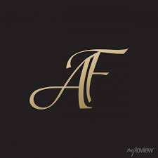

Inicio
Productos
Nosotros
Preguntas
Contactanos
Nosotras
Somos Mujeres conectadas por un mismo amor, el de las carteras, en búsqueda de productos de moda, salimos al mundo con una nueva normalidad, donde nos conectamos primero con nosotras, luego con los afectos y así comenzamos a rearmar la vida que teníamos, dándole mayor valor a cada cosa, disfrutando más, queriendo y sintiendo más, aferradas a una misma realidad, buscando ¨bienestar¨ conectadas a AF CARTERAS.